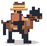

Paid pilot · inquiries open
Parcel Fit
Purpose-specific desktop screening for equestrian, event, and special-use land. View a sample report and request a scoped review.
Research
DEEP IN THE DIGITAL WEST · EST. 2026
One man's collection of tools, games, and rabbit holes.
Pick a building. See where the trail goes.
CHAPTER 02 / THE OPEN RANGE
Keep scrolling. The trail doesn't end at the town limits.

More games and experiments are in the works.
See what's here now ↓Part workshop. Part arcade. Always something worth poking around in.
03 / Choose your adventure
Three good places to start.
04 / The whole collection
A few finished things. A few wild ideas.
Purpose-specific desktop screening for equestrian, event, and special-use land. View a sample report and request a scoped review.
Learn agent orchestration by running a real workflow. Inspect state, break it, repair it, and build it in Python.
Get lost in swipeable top tens. Reveal the countdown, call your #1, or create a rabbit hole with your own AI.
The Family Business and the full economics library: experience markets, incentives, finance, and policy.
Take the chair. Balance inflation, jobs, and the unexpected.
Cooperate or defect? Discover what it takes to build trust.
Follow bills, inspect official records, and compare promises with actions.
Bring your price history. Explore returns, risk, and correlations.
Turn the macro dials and see how a portfolio might respond.
Move a market. Test price controls, taxes, and economic shocks.
Explore bargaining, auctions, incentives, and game theory.
Find equilibrium in a market of changing supply and demand.
Join the family. Run the deli, earn responsibility, and carry economics through one persistent 8-bit world.
Turn saved lab runs into a report you can edit and download.
Find land for a real brief. Check terrain, commute, sources, and room to grow.
A weather-market worksheet for research and paper scenarios.
Use your chat app, connect your own models, or explore with a free local preview.
A very unqualified police chief. A very questionable adventure.
Explore the video-editing workspace. Rendering requires the local setup.
The person behind the programs: experience, projects, and what’s next.
No projects down this trail. Try another search or reset the filters.
Use supported projects with the AI app you already have. Choose the context to share, then continue in your app. The connection guide explains interactive tools and their availability.